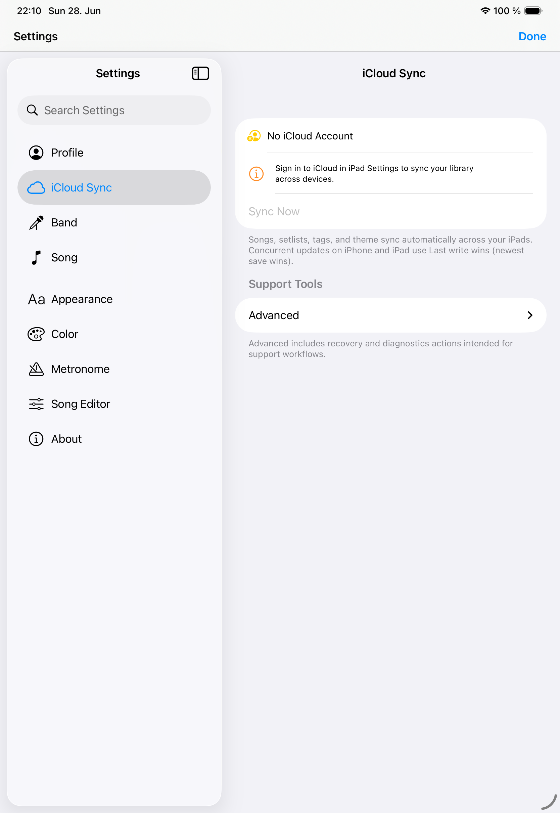

Preferences
Settings
Settings control appearance, layout, optional editor fields, purchases, sync status, diagnostics, and advanced maintenance.

Appearance and display
- Choose system, light, or dark appearance.
- Adjust chord and lyric colors for light and dark song themes.
- Set font family, base font size, ChordPro layout mode, and chord block alignment.
- Control live bar size and opacity.
Editor fields
Optional fields such as author, copyright, CCLI, and time signature can be shown when your library needs them and hidden when you want a simpler editor.
Purchases
The Purchases screen shows remaining free song additions, remaining active band slots, yearly and lifetime unlimited-song options, and the extra active band slot purchase.
- Free users can add 5 songs. Deleting songs does not restore free song additions.
- Yearly and lifetime purchases unlock unlimited song additions.
- Each €0.99 extra active-band purchase adds one active band slot.
- Restore purchases applies to yearly and lifetime purchases. Extra active band slots are tracked by processed purchase transactions.
Diagnostics
Use status panels, logs, and diagnostics snapshots when support needs context. Avoid advanced recovery tools unless the app directs you there.